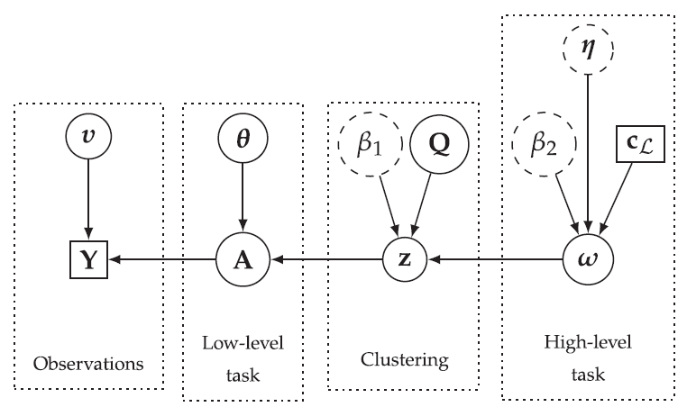
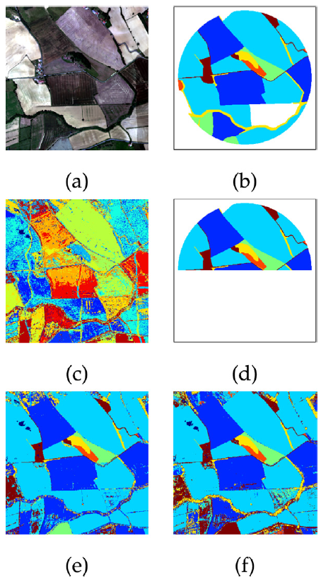

Hierarchical Bayesian image analysis
From low-level modeling to robust supervised learning
Within a supervised classification framework, labeled data are used to learn classifier parameters. Prior to that, it is generally required to perform dimensionality reduction via
feature extraction. These pre- processing steps have motivated numerous research works aiming at recovering latent variables in an unsupervised context.
This paper proposes a unified framework to perform classification and low-level modeling jointly.
The main objective is to use the estimated latent variables as features for classification and to incorporate simultaneously supervised information to help
latent variable extraction.
The proposed hierarchical Bayesian model is divided into three stages: a first low-level modeling stage to estimate la- tent variables,
a second stage clustering these features into statistically homogeneous groups and a last classification stage exploiting the (possibly badly) labeled data.
The resulting directed acyclic graph is depicted in Fig. 1.

Fig. 1. Directed acyclic graph of the proposed hierarchical Bayesian model (user-defined parameters appear in dotted circles and external data in squares).
Performance of the model is assessed in the specific context of hyperspectral image interpretation, unifying two standard analysis techniques, namely unmixing and classification. Some classification
results are depicted in Fig. 2.

Fig. 2. Real MUESLI image. Colored composition of the hyperspectral image (a), expert ground-truth (b), estimated clustering (c), training data (d), estimated clas- sification with proposed model (e) and estimated classification with random forest (f).
The model and the algorithms are detailed in the paper published in Pattern recognition:
- article
 .
.
The corresponding Python codes are available on Adrian Lagrange's GitHub.
- Python codes
 .
.